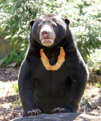
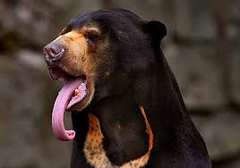
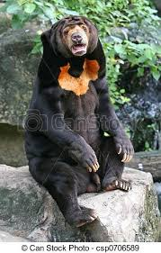
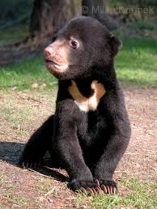
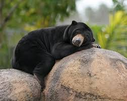

What Exactly is a Malayan Sun Bears
The Malayan Sun Bear has its name due to the large bib-like golden patch on their neck and chest area. Legends say that it represents the rising sun. Sun Bears are found usually anywhere that ranges from Southern China to Eastern India and even as far as south Indonesia. They are stocky and short which tends to lead them to be referred to as "dog bears". They have a thick, coarse, black coat that is short so they can survive in tropical weather. They grow to be less then or about half the size of the American Black Bear. The male bears tend to be larger than the females, but each have the size and shape that allows them to move easily through the forrest.
Feeding and Diet
The Sun bear has a special diet that you would not expect out of a bear. Because they are nocturnal, they wonder through the trees at night looking for fruits berries, bugs, small birds and rodents. Their sense of smell is amazing and their claws so long that they range in about four inches in length. Their tongue seems to be extremely long so they can use it to extract honey from the bee nests which gives them a nickname "honey bear". They are omnivores.
    
Conservation
The Sun bear is losing its habitat rapidly due to deforestation and the fact that poachers hunt them for their body parts and fur doesn't help what so ever. Scientists fear the worst for these bears because they are shy have a very shy personality. Often times farmers who see them on their land just kill them on site because they try to eat their crops. Many mother sun bears are killed so that humans can take their cubs and raise them to be pets. In Peninsular Malaysia and Indonesia camera traps increasingly record bears with missing paws and in a radio collaring study in Peninsular Malaysia, three out of five captured Sun Bears had missing paws, indicating high snaring pressure using cable snares. Measures to reduce habitat loss and poaching throughout the entire Sun Bear range are key actions needed to conserve Sun Bears. In areas with the highest deforestation rates, such as Indonesia and Malaysia, immediate action should be taken to protect remaining high conservation value forests from conversion to other land-uses, eliminate unsustainable logging, and effectively manage forest fires.